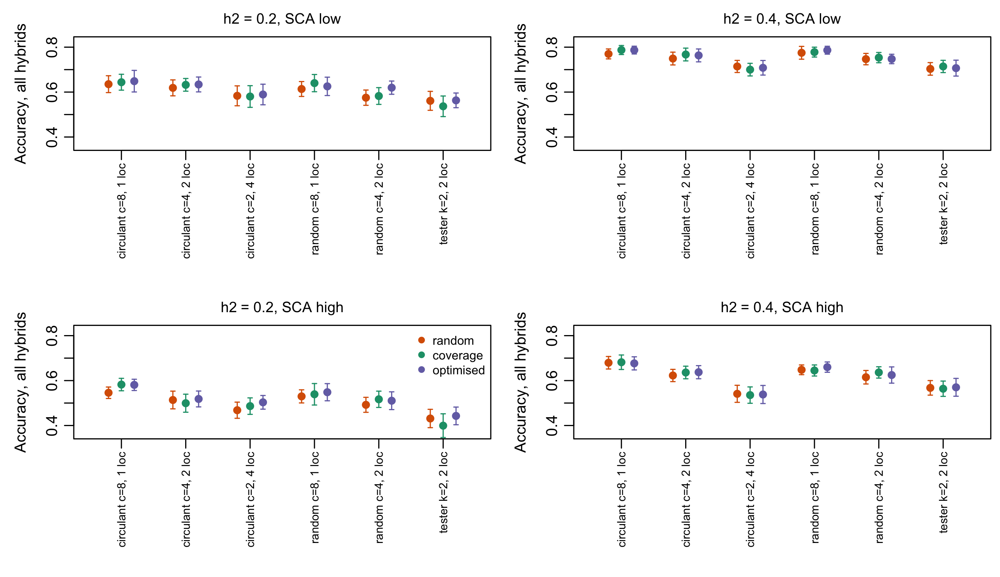
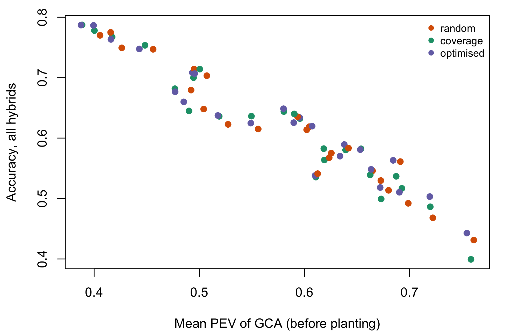

11Which crosses, at which locations? Joint sparse allocation
Chapter 9 chose which crosses to make from two pools, with the field design held fixed. Chapter 10 chose which locations each hybrid goes to, with the whole factorial taken as given. A programme makes both decisions out of one budget, in the same season, and each changes what the other can do: a cross that is not made cannot be planted anywhere, and a cross planted in one location says nothing about the others except through its parents. This chapter treats the two as one decision.
Within the search reported in Section 11.3, the literature has not. It finds strong methods for each half – model-based designs that place entries in environments using genetic relatedness, and training-set criteria that choose which single crosses to phenotype – but no method that chooses the crosses and their locations together for a two-pool hybrid programme. That is an absence of evidence from one search, not a proof of absence. The nearest treatments either optimise the crosses and leave the environments to the trial manager (Heslot and Feoktistov 2020; Kadam et al. 2021), or optimise the environments for a fixed entry list (Cullis et al. 2020; Montesinos-López et al. 2022). Section 9.9 listed this as its second gap and Section 10.13 asked for the female x male x location connectivity metric that it needs; both are taken up here.
The results this chapter defends:
At a fixed budget, distinct crosses beat locations per cross for predicting all hybrids. Spending 160 plots as 160 crosses at one location each beat 80 at two, which beat 40 at four, in the direction of every scenario simulated; not every single step is resolved by 30 replicates, and the margin grows with SCA. For the crosses that were made the comparison reverses: 40 crosses at four locations estimate those better than 160 at one. The split of the budget is therefore a statement about what will be selected.
Allocation strategy is a second-order decision. With the plan and the locations per cross fixed, a placement that keeps as much of both pools as possible in each location raises parent coverage substantially, but its accuracy gain over random placement of the same plan is not detected: half a point at most on the point estimate, at 1.7 standard errors, and none in the tester design.
The PEV criterion ranks plans, not placements. The mean PEV of GCA, computable before planting, orders the budget splits much as accuracy does. An exchange search on it, run for 600 proposals, lowered PEV below its own greedy start by a fraction of a percent and bought no accuracy overall (the tester design is a tentative exception). The search had not converged, so this bounds what 600 proposals buy, not what placement optimisation can.
NoteWhere the numbers come from
Everything here is reproducible from this repository.
Live results run at render time with R/18_joint_allocation.R, which builds the allocation matrix of R/17_sparse_testing.R with zero rows for crosses that are not made, so the R/17 simulator, mixed-model solve and connectivity diagnostics take it unchanged.
In-repo results come from Rscript book/scripts/regenerate.R joint (joint_core_sweep.csv, joint_contrasts.csv, joint_optimiser.csv; about 30 minutes of CPU): 20 x 20 pools in half-sib families of four, eight locations, known variance components, 30 replicates per cell. Strategy comparisons are paired: within a replicate the designs share the plan and the true values.
There is no cached external study behind this chapter, unlike Chapter 9 and Chapter 10.
11.1 Why the two decisions are one
Write \(n_c\) for the number of distinct crosses made, \(k\) for the number of locations each cross is planted in, and \(r\) for plots per cross per location. The field budget is
\[
B = n_c \, k \, r .
\]
Chapter 9 varied \(n_c\) (through the crosses per line \(c\), \(n_c = c\,n_F\) for a circulant plan) at fixed \(k\); Chapter 10 varied \(k\) and the layout at fixed \(n_c = n_F n_M\). At \(r = 1\), which is the stage-1 norm, fixing \(B\) ties the two together: halving the crosses doubles the locations each one can see. Neither chapter could ask which way to spend the budget, because each held the other term fixed.
The two terms buy different things. More crosses put more lines into data and sample more of the factorial, which is what predicts the crosses never made (Section 9.6; Melchinger et al. (2023)). More locations per cross sample more of the target population of environments, which is what shrinks the genotype x location noise around each GCA (Section 10.11.3, result 2; Werner et al. (2025)). Which matters more depends on the ratio of SCA to GCA variance, on the share of genotype x location in the genetic variance, and on how well the relationship matrix links lines across families – precisely the quantities a programme knows least about at stage 1.
with \(g^F \sim N(0, A_F\sigma^2_F)\), \(g^M \sim N(0, A_M\sigma^2_M)\), \(s \sim N(0, (A_F \otimes A_M)\sigma^2_S)\) and the interactions with location carrying the same kernels crossed with an identity over locations. The target is the value in the target population of environments, \(g^F_i + g^M_j + s_{ij}\).
One simplification is inherited from Chapter 10 and must be declared. With one plot per cross per location, \((s\ell)_{ijl}\) and \(e_{ijl}\) have the same incidence, so the analysis model cannot separate them and carries their sum as an i.i.d. residual of variance \(\sigma^2_{S\ell} + \sigma^2_e\). The simulator draws \((s\ell)\) with the kernel \((A_F \otimes A_M)\), so the analysis model is misspecified, by an amount this chapter does not quantify: the BLUP and every PEV below are exact for the analysis model, not for the model that generated the data.
What is new is only the incidence. A crossing plan \(P \subset \{1..n_F\} \times
\{1..n_M\}\) and an allocation give a 0/1 matrix \(M\) of size \(n_F n_M \times L\) in which a row is zero whenever \((i, j) \notin P\). Every row in \(P\) sums to \(k\). The R/17 functions accept such an \(M\) directly; the unmade crosses are predicted through \(A_F\), \(A_M\) and the GCA they share with made crosses – the CV1 prediction of Section 10.4, now produced by the crossing plan rather than by a mask.
Show code
p <-design_circulant(6, 6, c =2) # 12 of 36 possible crossesM <-joint_alloc(p, 6, 6, nLoc =3, k =1, strategy ="coverage")c(crosses_made =sum(rowSums(M) >0), plots =sum(M), per_location =colSums(M))#> crosses_made plots per_location1 per_location2 per_location3 #> 12 12 4 4 4
11.3 What the literature offers
The search was run in October 2026 over three sources: the Consensus index of peer-reviewed papers (Semantic Scholar, OpenAlex and PubMed), Crossref, and a general web search, with the bioRxiv and Crop Science / Plant Genome literature reached through them. Queries combined sparse testing, multi-environment trial, allocation of genotypes / hybrids to environments, incomplete factorial, mating design, training set optimisation, CDmean, A-optimality and genetic relatedness, with and without hybrid and maize. It looked for methods that allocate entries to environments, choose crosses or training hybrids, or both. Six families of approach emerge. None was built for the joint problem, but each supplies a piece. The training-set optimisation line of Akdemir et al. (2021), Isidro y Sanchez and Akdemir (2021) and Fernandez-Gonzalez et al. (2023) is the nearest neighbour not in the table: its tools select genotypes for a training set, and could in principle be pointed at genotype-environment pairs, but none of the papers found does so for a crossing plan.
Show code
lit <-data.frame(Approach =c("Model-based design with relatedness","CD / PEV criteria for multi-environment trials","Choosing hybrids to create and phenotype","Allocation by incomplete-block principle","Environment structure in allocation","Sparse factorials and sparse testcrossing"),Optimises =c("Entry placement in plots and environments (A-optimality on the mixed-model equations)","Multi-environment design, forecast under a G x E model","Which single crosses to make and phenotype","Which lines go to which environment","Replication and sparsity across mega-environments","Crosses per line, testers per family"),`Held fixed`=c("The entry list", "The entry list", "The environments","The entry list", "The entry list", "The environments"),Borrowed =c("The criterion (PEV of GCA)", "Reliability forecast before planting","Exchange search over a binary design", "Balance of location loads","Locations are not exchangeable", "Parent coverage, connectivity"),Refs =c("butler2014; cullis2020; lisle2021", "rio2022","heslot2020; kadam2021", "montesinoslopez2022ibd; montesinoslopez2023; lell2021; mothukuri2025","gonzalezbarrios2019; hoefler2026","seye2020; lorenzi2022; melchinger2023; gonzalezdieguez2026"),check.names =FALSE)knitr::kable(lit, row.names =FALSE)
Table 11.1: Current approaches, what each optimises, and what each holds fixed. The last column is the piece the joint problem borrows.
Approach
Optimises
Held fixed
Borrowed
Refs
Model-based design with relatedness
Entry placement in plots and environments (A-optimality on the mixed-model equations)
The entry list
The criterion (PEV of GCA)
butler2014; cullis2020; lisle2021
CD / PEV criteria for multi-environment trials
Multi-environment design, forecast under a G x E model
Model-based design with relatedness.Butler et al. (2014) and Cullis et al. (2020) generate field designs by optimising a criterion – the A-optimality of the predicted genetic effects – computed from the linear mixed model that will analyse the trial, with the relationship matrix inside it. Their in-silico studies show that designs built this way are more accurate than designs built for unrelated entries. Lisle et al. (2021) add an information-based diagnostic for whether a multi-environment design can estimate its genetic variance parameters at all. This is the most principled framework available, and the criterion this chapter uses is its restriction to the GCA effects. What it does not do is choose the entries: the list of varieties is an input.
CD and PEV criteria for multi-environment trials.Rio et al. (2022) extend the coefficient of determination, the CDmean of Rincent et al. (2012), to G x E models, so that the reliability of a multi-environment design can be forecast before it is planted and the design optimised on it, for a given set of genotypes.
Choosing which hybrids to create.Kadam et al. (2021) apply PEV and CDmean to single crosses and show that optimising over all possible crosses, not only the ones already made, gives a better training set – the crossing half of the joint problem, with the environment design held fixed. Heslot and Feoktistov (2020) are the closest methodological precedent. They optimise which maize hybrids to create and phenotype, to best predict the unobserved combinations, with a mixed binary-integer differential evolution, and extend the method to designing a connected population before the crosses are made. The environments are again outside the optimisation.
Allocation by incomplete-block principle.Montesinos-López et al. (2022) allocate lines to locations with an incomplete block design and beat random allocation by 1.4 to 26.5 % in mean squared error; Montesinos-López et al. (2023) find balanced incomplete blocks and random allocation close. Lell et al. (2021), on 1,604 wheat hybrids, find the best design splits the hybrids into equal subgroups each tested in an overlapping subset of environments. Mothukuri et al. (2025) use the relationship between fully and sparsely tested maize lines to guide the split, with a weak positive correlation (0.20 to 0.31) between the relationship measures and accuracy. All four take the entries as given.
Environment structure. The mega-environmental design of González-Barrios et al. (2019) allocates entries so that each mega-environment is sampled, and reports a 40 % gain in response for the same resources; Hoefler and Gutierrez (2026) optimise its replication and sparsity by simulation. Both are reminders that the locations here are treated as exchangeable, which a real target population of environments is not.
Sparse factorials and sparse testcrossing.Seye et al. (2020), Lorenzi et al. (2022) and Melchinger et al. (2023) establish that sparse factorials train hybrid prediction at least as well as tester designs, and that fewer crosses per line favours the lines never crossed; González-Diéguez et al. (2026) spread three to five testers among full-sibs. Thomsen et al. (2026) analyse oilseed-rape hybrids under sparse multi-environment testing, observationally. Schoemaker et al. (2024) trade testers against environments in maize and find three to five well-chosen environments match ten random ones – the closest empirical look at one corner of the joint budget.
The gap is therefore precise. The criteria exist (PEV and CD with relatedness), the search methods exist (exchange algorithms, differential evolution), and both halves have been optimised separately. What is missing is the object that holds the crossing plan and the allocation together under one budget, and evidence on how the budget should be split.
11.4 Design criteria computable before planting
Two quantities can be read off \(M\) before a seed is sown.
The mean PEV of GCA. The left-hand side of the mixed-model equations depends on the design alone, so its inverse, and with it the prediction error variance of every GCA effect, is known before any phenotype exists. joint_pev() returns the mean over the \(n_F + n_M\) GCA effects. It is the A-optimality criterion of Butler et al. (2014) restricted to the effects parents are selected on; with known components it is exact for the analysis model of Section 11.2, and Table 11.2 shows it ranking allocations of the same plan. It is blind to two things a programme may care about: SCA, and the difference between predicting crosses that were made and crosses that were not.
Two component counts. A single graph with females, males and locations as nodes is the obvious female x male x location metric, and it is wrong: a location node joins every parent planted there, so at one location it reports one component for any crossing plan, including two disconnected NC II blocks. A shared location links only sums of GCA. joint_connectivity() therefore returns two counts alongside the R/17 diagnostics:
n_comp_cross, the components of the female x male graph of the crosses that receive a plot, pooled over locations. GCA is a main effect shared by every location, so this is what links GCA contrasts by data, and at one location it is exactly the bipartite count of Section 9.2.3.
n_comp_loc, the components of the location graph in which two locations are joined when they share a parent. Location contrasts are linked by data only when it is 1.
Both equal to 1 is necessary, not sufficient: a relationship matrix can link families the data do not, and shared parents link locations only through those parents’ GCA. This pair is the female x male x location metric Section 10.13 asked for.
Show code
set.seed(11)vc <-sparse_vc(0.3); A <-relmat_halfsib(10, 2)p <-design_circulant(10, 10, c =3)live <-do.call(rbind, lapply(names(strat_col), function(s) { M <-joint_alloc(p, 10, 10, nLoc =4, k =2, strategy = s, vc = vc,Af = A, Am = A, n_iter =100) cn <-joint_connectivity(M, 10, 10)data.frame(strategy = s, plots =sum(M), pev_gca =joint_pev(M, 10, 10, vc, A, A),fem_cover = cn$fem_cover, male_cover = cn$male_cover,n_comp_cross = cn$n_comp_cross, n_comp_loc = cn$n_comp_loc)}))knitr::kable(fmt(live, 4), row.names =FALSE)
Table 11.2: One crossing plan (circulant, 3 crosses per line, 10 x 10), three allocations over 4 locations at 2 locations per cross. Mean PEV of GCA (lower is better), share of each pool present per location, and the two component counts. Live.
strategy
plots
pev_gca
fem_cover
male_cover
n_comp_cross
n_comp_loc
random
60
0.6405
0.85
0.8
1
1
coverage
60
0.6341
1.00
1.0
1
1
optimised
60
0.6325
1.00
1.0
1
1
11.5 What the simulation finds
The sweep crosses six configurations that all spend 160 plots (the tester design 152) – circulant plans with 8, 4 and 2 crosses per line at 1, 2 and 4 locations per cross, random sparse plans with 8 and 4, and a two-tester design at two locations – with the allocation strategies, two plot heritabilities and two SCA levels (sparse_vc(): SCA a quarter of, or equal to, a GCA variance; genotype x location half of each main effect, so a genetic correlation of 2/3 between locations). Pools are 20 x 20 in half-sib families of four; eight locations; 30 replicates per cell.
The comparisons are paired. In each replicate one plan is drawn; random and coverage allocate that same plan; and every design is simulated from the same seed, so they share the true genetic values (sparse_simulate() draws every effect before it looks at the allocation). The exchange search is too slow to repeat per replicate, so per cell one plan gets a coverage allocation (start) and a search from it; those two fixed designs are then simulated in every replicate with the same seed, which pairs optimised with its own start.
11.5.1 1. The budget split: crosses against locations
Show code
lev <-c("circulant c=8, 1 loc", "circulant c=4, 2 loc", "circulant c=2, 4 loc","random c=8, 1 loc", "random c=4, 2 loc", "tester k=2, 2 loc")op <-par(mfrow =c(2, 2), mar =c(7.5, 4, 2, 0.5), mgp =c(2.4, 0.7, 0))for (sc inc("low", "high")) for (h inc(0.2, 0.4)) { d <- js[js$sca == sc & js$h2_plot == h, ]plot(NA, xlim =c(0.5, length(lev) +0.5), ylim =range(js$acc_all) +c(-0.04, 0.04),xaxt ="n", xlab ="", ylab ="Accuracy, all hybrids",main =sprintf("h2 = %.1f, SCA %s", h, sc), cex.main =0.95, font.main =1)axis(1, at =seq_along(lev), labels = lev, las =2, cex.axis =0.75)for (j inseq_along(strat_col)) { e <- d[d$strategy ==names(strat_col)[j], ] x <-match(e$label, lev) + (j -2) *0.2arrows(x, e$acc_all -2* e$acc_all_se, x, e$acc_all +2* e$acc_all_se,angle =90, code =3, length =0.02, col = strat_col[j])points(x, e$acc_all, pch =19, col = strat_col[j]) }if (sc =="high"&& h ==0.2)legend("topright", legend =names(strat_col), col = strat_col, pch =19,bty ="n", cex =0.8)}par(op)

Figure 11.1: Accuracy over all 400 possible hybrids at 160 plots (tester 152), by configuration (crosses per line, locations per cross) and allocation strategy, in the four variance scenarios. Bars are two standard errors of the cell mean. optimised is one fixed design per cell. In-repo sweep, known components, 30 replicates.
Figure 11.1 reads left to right along the budget identity. Within the circulant family, with the coverage allocation, 160 crosses at one location each reach 0.787 at \(h^2 = 0.4\) and low SCA, 80 crosses at two locations 0.767, and 40 at four 0.700. With high SCA the steps are larger – 0.682, 0.636, 0.535 – because a cross that is not made has an SCA no replication of other crosses can reveal. The order holds in all four scenarios. Its size is uneven: the step from 80 to 160 crosses is 0.5 to 3.4 standard errors of the difference across scenarios, the step from 40 to 80 0.5 to 4.4. The 160-versus-80 step at low SCA and the 80-versus-40 step at \(h^2 = 0.2\) with high SCA are not resolved by 30 replicates; only their direction agrees with the rest. The two-tester design, with 76 crosses at two locations, sits below the circulant plan with 80 crosses at two locations in every scenario, at nearly the same budget (152 against 160 plots).
For the crosses that were made the comparison reverses (Table 11.3), though not step by step: at \(h^2 = 0.2\) and high SCA, 80 crosses at two locations are no better than 160 at one. Forty crosses at four locations estimate those crosses at 0.845, against 0.807 for 160 crosses at one location (\(h^2 = 0.4\), low SCA; 1.2 to 6.0 standard errors across scenarios), because each is seen in four environments rather than one. A programme that picks parents on GCA, or will choose among all possible single crosses with a prediction model, should spend the budget on distinct crosses. A programme that will advance only crosses it has made gets better estimates of those crosses from more locations – but it then chooses among 40 candidates instead of 160, and the response to selection depends on that intensity as well as on accuracy. This chapter measures accuracy only; it does not settle that trade.
Table 11.3: The circulant trade-off at 160 plots, coverage allocation: accuracy over all hybrids, over the crosses made, and over those not made, with standard errors of the cell means.
SCA
Plot h2
Crosses
Loc./cross
All
SE
Made
SE
Not made
high
0.2
160
1
0.582
0.014
0.618
0.014
0.558
high
0.2
80
2
0.499
0.020
0.610
0.018
0.467
high
0.2
40
4
0.486
0.018
0.709
0.018
0.455
high
0.4
160
1
0.682
0.016
0.742
0.012
0.637
high
0.4
80
2
0.636
0.014
0.783
0.009
0.595
high
0.4
40
4
0.535
0.018
0.837
0.010
0.490
low
0.2
160
1
0.644
0.018
0.669
0.017
0.627
low
0.2
80
2
0.632
0.014
0.693
0.013
0.616
low
0.2
40
4
0.580
0.024
0.704
0.023
0.565
low
0.4
160
1
0.787
0.010
0.807
0.010
0.775
low
0.4
80
2
0.767
0.014
0.824
0.011
0.753
low
0.4
40
4
0.700
0.014
0.845
0.011
0.683
The result of Chapter 10 that spreading a fixed number of plots per hybrid over more locations raises accuracy (Section 10.11.3, result 2) is not contradicted. There each hybrid kept two plots and the factorial was complete; here every extra location per cross is paid for with a cross. Spreading wins when it is free and loses, on all-hybrid accuracy, when it costs crosses. That was measured at one genetic correlation between locations, 2/3. A lower correlation makes each location carry less information about the others, which would be expected to move the optimum toward more locations per cross; this sweep did not test it.
11.5.2 2. Allocation strategy, with the plan fixed
With the plan and \(k\) fixed, the strategies are close (Figure 11.1). The paired contrasts (Table 11.4) resolve what the cell means cannot. Coverage does what it is built to do: in the factorial plans the share of females present per location rises from 0.676 under random placement to 0.874. Paired against random placement of the same plan, the accuracy difference over all hybrids, averaged over the 24 cells, is +0.0057 \(\pm\) 0.0033 (z = 1.7; 16 of 24 cells positive). That is below the two-standard-error bar this chapter uses, so the gain is not detected; only 2 of the 24 cells differ by more than two standard errors on their own, about what chance gives. The tester design is the exception in the other direction: there coverage moves the share of each pool present per location only from 0.494 to 0.549 – each tester already sits in most locations – and the paired difference is -0.012 \(\pm\) 0.011. An earlier, unpaired version of this sweep had suggested the opposite for the tester design; with the plan and the truth held fixed, the suggestion does not survive.
Table 11.4: Paired contrasts in accuracy over all hybrids, pooled over the four variance scenarios within each plan family (and over everything in the last row of each block). diff is the mean paired difference, SE its standard error, positive the number of cells with a positive difference.
Contrast
Plan family
Cells
diff
SE
Positive
coverage - random
circulant
12
0.0075
0.0042
8
coverage - random
random
8
0.0119
0.0052
7
coverage - random
tester
4
-0.0123
0.0108
1
coverage - random
all
24
0.0057
0.0033
16
optimised - start
circulant
12
0.0023
0.0030
8
optimised - start
random
8
-0.0050
0.0035
5
optimised - start
tester
4
0.0189
0.0070
4
optimised - start
all
24
0.0027
0.0022
17
This replicates, with the plan now variable, the finding of Chapter 10 that structured layouts matter little except at extreme sparsity, and it sits with the mixed record of the literature: Montesinos-López et al. (2022) found incomplete blocks better than random, Montesinos-López et al. (2023) found them close. When every line appears in several crosses spread over eight locations, random placement already puts most parents in most locations; whatever coverage adds – at most about half a point on the point estimate – is small next to the budget split.
11.5.3 3. What the criterion can and cannot see
Show code
jp <- js[js$strategy %in%names(strat_col), ]op <-par(mar =c(4.2, 4.2, 1, 1))plot(jp$pev_gca, jp$acc_all, pch =19, col = strat_col[jp$strategy],xlab ="Mean PEV of GCA (before planting)", ylab ="Accuracy, all hybrids")legend("topright", legend =names(strat_col), col = strat_col, pch =19, bty ="n", cex =0.8)par(op)r_pev <-cor(jp$pev_gca, jp$acc_all)# Rank agreement between PEV and accuracy over the six configurations, per scenario.cvr <- js[js$strategy =="coverage", ]rho <-sapply(split(cvr, paste(cvr$h2_plot, cvr$sca)),function(d) cor(d$pev_gca, d$acc_all, method ="spearman"))rho_made <-sapply(split(cvr, paste(cvr$h2_plot, cvr$sca)),function(d) cor(d$pev_gca, d$acc_made, method ="spearman"))g300 <-median(1- jo$pev_300 / jo$pev_start)g600 <-median(1- jo$pev_600 / jo$pev_start)spread <-sapply(split(jp, paste(jp$label, jp$h2_plot, jp$sca)),function(d) diff(range(d$pev_gca)) /min(d$pev_gca))second <- (jo$pev_300 - jo$pev_600) / (jo$pev_start - jo$pev_300)pot <-pooled("optimised - start", by ="plan")pot <- pot[pot$group =="tester", ]

Figure 11.2: Mean PEV of GCA, computed before planting, against realised accuracy over all hybrids. One point per configuration x strategy x scenario; colour is the strategy. In-repo sweep.
Across all cells the mean PEV of GCA correlates with accuracy over all hybrids at -0.96 (Figure 11.2; lower PEV, higher accuracy). Almost all of that comes from the plan and the scenario: the clusters are configurations, and within a cluster the strategies differ by 0.3 to 4.7 % in PEV (median 1.8 %). Over the six configurations of one scenario, the rank correlation between PEV and all-hybrid accuracy is -1.00 to -0.89. The criterion is therefore a usable screen for which plan and how many locations per cross – it can be computed for every split of a budget in seconds – but only for that objective. Against accuracy on the crosses that were made its rank correlation is 0.20 to 0.66: mean PEV of GCA cannot see SCA or the made/unmade distinction, so it steers a programme that selects only among made crosses the wrong way.
As a guide to fine placement it is weak, and the exchange search shows it from the other side (Table 11.5). From the coverage start, 300 proposals lowered PEV by a median 0.10 % and 600 by 0.15 %, at about 47 seconds per design against a millisecond for the greedy start. Paired against its own start the optimised design changed accuracy by +0.0027 \(\pm\) 0.0022 overall. The one family that stands out is the tester design, +0.019 \(\pm\) 0.007 with all four cells positive, where the search also found the largest PEV reductions. It is tentative: each cell is one optimised design from one plan, and it is one of three plan families, with no correction for that. The search is first-improvement with no convergence test, and it had not converged: the second 300 proposals added a median 40 % of what the first 300 achieved, and in 8 of 24 cells 65 % or more. PEV was still falling. These results therefore say what 600 proposals buy – a fraction of a percent of PEV and no detected accuracy – not what a converged placement optimiser would buy. The optimised-block design of the external study behind Chapter 10 showed the same absence of gain on untested hybrids.
Table 11.5: The exchange search on mean PEV of GCA, one design per cell: PEV of the coverage start and after 300 and 600 proposals. Seconds are CPU-bound wall time (the last three cells ran across a machine sleep and are omitted).
Plan
c
Loc./cross
Plot h2
SCA
PEV start
PEV 300
PEV 600
Seconds
circulant
8
1
0.2
high
0.6538
0.6534
0.6531
47
circulant
4
2
0.2
high
0.6726
0.6721
0.6720
47
circulant
2
4
0.2
high
0.7198
0.7195
0.7193
48
random
8
1
0.2
high
0.6642
0.6638
0.6634
47
random
4
2
0.2
high
0.6907
0.6903
0.6903
47
tester
2
2
0.2
high
0.7560
0.7548
0.7545
46
circulant
8
1
0.4
high
0.4774
0.4773
0.4770
48
circulant
4
2
0.4
high
0.5184
0.5179
0.5177
47
circulant
2
4
0.4
high
0.6107
0.6103
0.6101
47
random
8
1
0.4
high
0.4860
0.4855
0.4852
NA
random
4
2
0.4
high
0.5504
0.5496
0.5490
NA
tester
2
2
0.4
high
0.6355
0.6340
0.6338
NA
circulant
8
1
0.2
low
0.5801
0.5801
0.5801
47
circulant
4
2
0.2
low
0.5963
0.5956
0.5954
49
circulant
2
4
0.2
low
0.6385
0.6381
0.6379
48
random
8
1
0.2
low
0.5909
0.5902
0.5898
47
random
4
2
0.2
low
0.6082
0.6076
0.6073
47
tester
2
2
0.2
low
0.6869
0.6850
0.6844
46
circulant
8
1
0.4
low
0.3885
0.3877
0.3875
47
circulant
4
2
0.4
low
0.4172
0.4162
0.4160
47
circulant
2
4
0.4
low
0.4947
0.4937
0.4934
47
random
8
1
0.4
low
0.4006
0.3999
0.3994
47
random
4
2
0.4
low
0.4450
0.4439
0.4430
48
tester
2
2
0.4
low
0.4983
0.4962
0.4956
48
The component counts were 1 in almost every replicate. The exception is informative: in two of the 120 random sparse plans with 4 crosses per line (one replicate in each of two scenarios, appearing under both strategies that share the plan), the draw split the factorial into two components (n_comp_cross = 2) – a defect of the plan that no allocation can repair, visible before a seed is sown. Location connectivity (n_comp_loc) was 1 throughout: with several crosses per line over eight locations, locations always shared parents.
11.5.4 Limitations of the simulation
Known variance components. The criterion and the BLUP use the true values; REML on a sparse trial is the weak point Section 10.11.3 found.
A misspecified analysis model: SCA x location is absorbed into an i.i.d. residual (Section 11.2).
Exchangeable locations with a genetic correlation of 2/3 between every pair. Mega-environment structure (González-Barrios et al. 2019; Hoefler and Gutierrez 2026) would favour allocations that sample each mega-environment, which the coverage rule does not see.
Half-sib relationships and one plot per cell. No markers, no spatial trend, no replicated checks.
One budget, one scale: 160 plots, 20 x 20 pools, eight locations.
Accuracy, not response. Selection intensity differs between 40 and 160 candidates and is not modelled.
The optimised strategy was searched once per cell, from one plan, with 600 first-improvement proposals.
11.6 Practical recommendations
TipA checklist for a joint crossing and testing plan
Fix the budget in plots, \(B = n_c k r\), and the locations available. Everything below trades inside it.
Decide what will be selected. If parents are chosen on GCA, or any single cross by prediction, favour distinct crosses: in this sweep 160 crosses at one location beat 80 at two, which beat 40 at four, in direction in every scenario, though not every step was resolved. If only crosses already made will be advanced, more locations estimate them better, but at the cost of selection intensity; weigh both.
Screen candidate splits with the mean PEV of GCA (joint_pev()), with the relationship matrix and variance components of the previous cycle. It ranks splits for the GCA / all-hybrid objective; it is blind to SCA and should not be used for a made-crosses-only objective.
Treat one location per cross with caution. It was best here, but with the variance components known. With one plot per cross each cross is confounded with its environment and REML has little to work with (Section 10.11.3, result 5); two locations per cross is the safer floor when the components must be estimated.
Place crosses with the coverage rule (joint_alloc(strategy = "coverage")). It costs nothing, balances loads and raises parent coverage; an accuracy gain over random placement was not detected (point estimate half a point), and in the tester design there was none.
Check n_comp_cross == 1 and n_comp_loc == 1 before planting. A random sparse plan can come out disconnected; the fix is a new plan, not a new allocation.
Reserve exchange optimisation of the placement for tester designs, and treat even that as provisional: overall it bought no accuracy, and the tester gain rests on four cells and a search that had not converged; run it well beyond 600 proposals. Whether it helps with unequal pools or strongly structured environments is untested.
11.7 Open problems
A joint optimiser over the plan itself. Here the plan family was enumerated and the placement optimised. Searching crosses and locations in one binary space is the problem Heslot and Feoktistov (2020) solved for crosses alone; the criterion is ready, the search at programme scale is not.
A criterion that sees SCA and the selection objective. Mean PEV of GCA ranks plans for one objective only; a criterion on the target values of the candidates that will actually be selected among, with intensity, is the missing piece.
Non-exchangeable environments. Combining the mega-environment structure of González-Barrios et al. (2019) with a crossing plan, and the genetic correlation between locations at which the optimum moves toward more locations.
Estimated components. How much of the budget split survives REML on the sparse trial, and whether the PEV screen should use a prior or the previous cycle’s estimates (Lisle et al. 2021).
Seed as a constraint. A cross planted at \(k\) locations needs \(k\) plots of seed; the cost structure of cross_cost() (Section 9.7) has not been joined to the allocation.
Prospective validation. As for sparse testing generally, no trial has been designed jointly sparse from the start and compared against a conventional plan.
11.8 Reproducibility and assumptions
Rscript book/scripts/regenerate.R joint writes joint_core_sweep.csv (cell means and standard errors), joint_contrasts.csv (paired contrasts) and joint_optimiser.csv (the exchange-search trace) to book/data, in about 30 minutes of CPU, almost two thirds of it in the exchange searches. It keeps the per-replicate results in report/joint_raw.rds (gitignored). The live example of Table 11.2 runs at render time. tests/testthat/test-joint.R checks that:
every made cross gets exactly \(k\) plots and every unmade cross none;
the coverage rule balances loads and covers more of each pool than random placement;
joint_pev() equals the GCA block of the explicitly inverted coefficient matrix of sparse_blup();
the optimised allocation never scores worse than its start, whether the start is implicit or passed in;
n_comp_cross is two for NC II blocks at one location, in separate locations and in shared locations, and equals the bipartite count of design_components(); n_comp_loc is two only when the blocks are grown apart.
The numbers are reproducible findings of this configuration, not constants: they will move with the budget, the pool sizes, the genetic correlation between locations and the SCA share.
11.9 Where this connects
Chapter 9 chose the crosses with the field fixed and Chapter 10 the field with the crosses fixed; this chapter puts both under one budget and finds the crossing plan the larger lever.
The coverage rule is result 4 of Section 10.11.3 – parent coverage, not shared hybrids, carries connectivity – turned into an allocation rule.
Spending the budget on distinct crosses keeps more lines in the data, which is the diversity argument of Section 9.11: a line never crossed is a line the next cycle will in practice not use (Chapter 16; Chapter 22).
The PEV screen is the same mixed-model machinery as the genomic prediction of Chapter 17, read before planting instead of after harvest.
Reproduce this chapter
All the code of this chapter, in order and with the explanation kept as comments, is one script: 04g-joint-allocation.R. Download it, install hybdiv, and run it top to bottom in an empty directory; cached results are fetched on first use.
Akdemir, D., S. Rio, and J. Isidro y Sánchez. 2021. “TrainSel: An R Package for Selection of Training Populations.”Frontiers in Genetics 12: 655287. https://doi.org/10.3389/fgene.2021.655287.
Butler, D. G., A. B. Smith, and B. R. Cullis. 2014. “On the Design of Field Experiments with Correlated Treatment Effects.”Journal of Agricultural, Biological, and Environmental Statistics 19: 539–55. https://doi.org/10.1007/s13253-014-0191-0.
Cullis, B. R., A. B. Smith, N. A. Cocks, and D. G. Butler. 2020. “The Design of Early-Stage Plant Breeding Trials Using Genetic Relatedness.”Journal of Agricultural, Biological and Environmental Statistics 25 (4): 553–78. https://doi.org/10.1007/s13253-020-00403-5.
Fernandez-Gonzalez, J., D. Akdemir, and J. Isidro y Sanchez. 2023. “A comparison of methods for training population optimization in genomic selection.”Theoretical and Applied Genetics 136: 30. https://doi.org/10.1007/s00122-023-04265-6.
González-Barrios, P., L. Díaz-García, and L. Gutiérrez. 2019. “Mega-Environmental Design: Using Genotype x Environment Interaction to Optimize Resources for Cultivar Testing.”Crop Science 59: 1899–915. https://doi.org/10.2135/cropsci2018.11.0692.
González-Diéguez, DO, GN Atlin, Y Beyene, D Wegary, DC Gemenet, and CR Werner. 2026. “Sparse testcrossing for early-stage genomic prediction of general combining ability to increase genetic gain in maize hybrid breeding programs.”TAG. Theoretical and Applied Genetics. Theoretische Und Angewandte Genetik, ahead of print. https://doi.org/10.1007/s00122-026-05169-x.
Heslot, N., and V. Feoktistov. 2020. “Optimization of Selective Phenotyping and Population Design for Genomic Prediction.”Journal of Agricultural, Biological and Environmental Statistics 25 (4): 579–600. https://doi.org/10.1007/s13253-020-00415-1.
Hoefler, R., and L. Gutierrez. 2026. “Simulation-Based Optimization of Mega-Environmental Designs for Sparse Multi-Environment Testing.”Crop Science 66. https://doi.org/10.1002/csc2.70366.
Isidro y Sanchez, J., and D. Akdemir. 2021. “Training set optimization for sparse phenotyping in genomic selection: a conceptual overview.”Frontiers in Plant Science 12: 715910. https://doi.org/10.3389/fpls.2021.715910.
Kadam, D. C., O. R. Rodriguez, and A. J. Lorenz. 2021. “Optimization of Training Sets for Genomic Prediction of Early-Stage Single Crosses in Maize.”Theoretical and Applied Genetics 134: 687–99. https://doi.org/10.1007/s00122-020-03722-w.
Lell, M., J. C. Reif, and Y. Zhao. 2021. “Optimizing the Setup of Multienvironmental Hybrid Wheat Yield Trials for Boosting the Selection Capability.”The Plant Genome 14: e20150. https://doi.org/10.1002/tpg2.20150.
Lisle, C., A. B. Smith, C. Birrell, and B. R. Cullis. 2021. “Information Based Diagnostic for Genetic Variance Parameter Estimation in Multi-Environment Trials.”Frontiers in Plant Science 12: 785430. https://doi.org/10.3389/fpls.2021.785430.
Lorenzi, Alizarine, Cyril Bauland, Tristan Mary-Huard, et al. 2022. “Genomic prediction of hybrid performance: comparison of the efficiency of factorial and tester designs used as training sets in a multiparental connected reciprocal design for maize silage.”Theoretical and Applied Genetics, ahead of print. https://doi.org/10.1007/s00122-022-04176-y.
Melchinger, AE, R Fernando, C Stricker, CC Schön, and HJ Auinger. 2023. “Genomic prediction in hybrid breeding: I. Optimizing the training set design.”TAG. Theoretical and Applied Genetics. Theoretische Und Angewandte Genetik, ahead of print. https://doi.org/10.1007/s00122-023-04413-y.
Montesinos-López, O. A., A. Montesinos-López, R. Acosta, R. K. Varshney, A. Bentley, and J. Crossa. 2022. “Using an Incomplete Block Design to Allocate Lines to Environments Improves Sparse Genome-Based Prediction in Plant Breeding.”The Plant Genome 15: e20194. https://doi.org/10.1002/tpg2.20194.
Montesinos-López, Osval A., Brandon A. Mosqueda-González, Josafat Salinas-Ruiz, Abelardo Montesinos-López, and José Crossa. 2023. “Sparse multi-trait genomic prediction under balanced incomplete block design.”The Plant Genome, ahead of print. https://doi.org/10.1002/tpg2.20305.
Mothukuri, S. R., Y. Beyene, M. Gültas, J. Burgueño, and S. Griebel. 2025. “Optimization of Sparse Phenotyping Strategy in Multi-Environmental Trials in Maize.”Theoretical and Applied Genetics 138. https://doi.org/10.1007/s00122-025-04825-y.
Rincent, R, D Laloë, S Nicolas, et al. 2012. “Maximizing the Reliability of Genomic Selection by Optimizing the Calibration Set of Reference Individuals: Comparison of Methods in Two Diverse Groups of Maize Inbreds (Zea maysL.).”Genetics, ahead of print. https://doi.org/10.1534/genetics.112.141473.
Rio, S., D. Akdemir, T. Carvalho, and J. Isidro y Sánchez. 2022. “Assessment of Genomic Prediction Reliability and Optimization of Experimental Designs in Multi-Environment Trials.”Theoretical and Applied Genetics 135: 405–19. https://doi.org/10.1007/s00122-021-03972-2.
Schoemaker, D. L., D. C. Lima, N. de Leon, and S. M. Kaeppler. 2024. “Modeling the Impact of Resource Allocation Decisions on Genomic Prediction Using Maize Multi-Environment Data.”Crop Science 64 (5): 2748–67. https://doi.org/10.1002/csc2.21305.
Seye, AI, C Bauland, A Charcosset, and L Moreau. 2020. “Revisiting hybrid breeding designs using genomic predictions: simulations highlight the superiority of incomplete factorials between segregating families over topcross designs.”TAG. Theoretical and Applied Genetics. Theoretische Und Angewandte Genetik, ahead of print. https://doi.org/10.1007/s00122-020-03573-5.
Thomsen, LE, M Frisch, C Flachenecker, et al. 2026. “Improving hybrid breeding efficiency in winter oilseed rape under sparse multi-environment testing.”TAG. Theoretical and Applied Genetics. Theoretische Und Angewandte Genetik, ahead of print. https://doi.org/10.1007/s00122-026-05341-3.
Werner, C. R., G. Covarrubias-Pazaran, D. Gonzalez-Dieguez, D. C. Gemenet, H. Gandhi, and G. N. Atlin. 2025. Early-stage sparse testing strategies to increase genetic gain in plant breeding programmes. bioRxiv preprint, not peer reviewed. https://doi.org/10.1101/2025.08.18.670883.